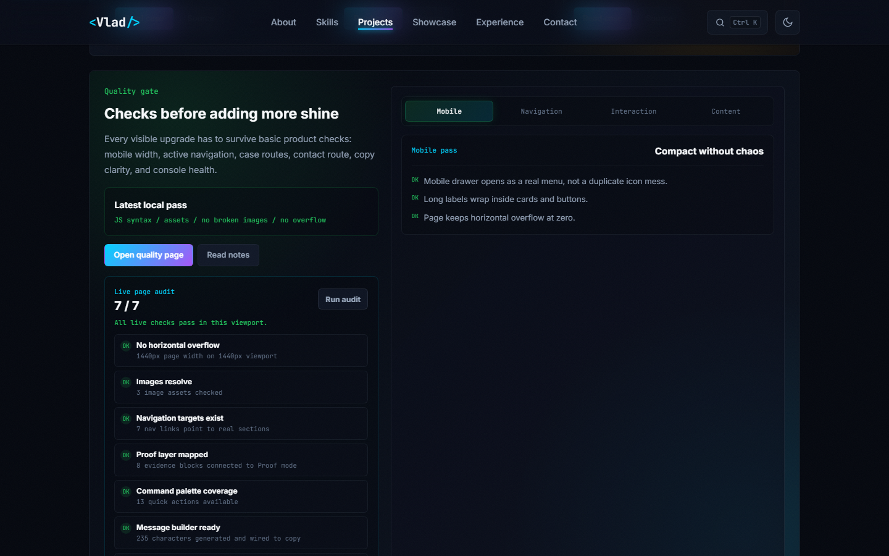

Quality gate without making the homepage heavier
This page collects the proof that belongs outside the main flow: live status, local checks, screenshots, source links, and the remaining risks worth tracking.

Console, overflow, images, routes
The local audit checks horizontal overflow, image loading, navigation targets, proof targets, command coverage, message builder wiring, and quality tabs.
Production headers are documented
GitHub Pages is live, with Netlify/Vercel/Cloudflare configs ready for a future deployment path.
AI and monitoring stay behind real boundaries
Sentry and AI navigator docs explain what should happen later without shipping browser-exposed secrets or fake assistants.